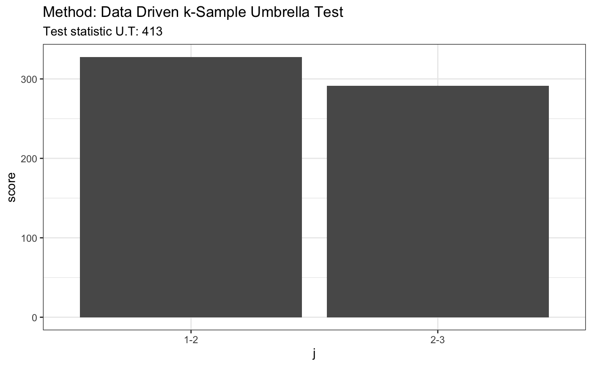
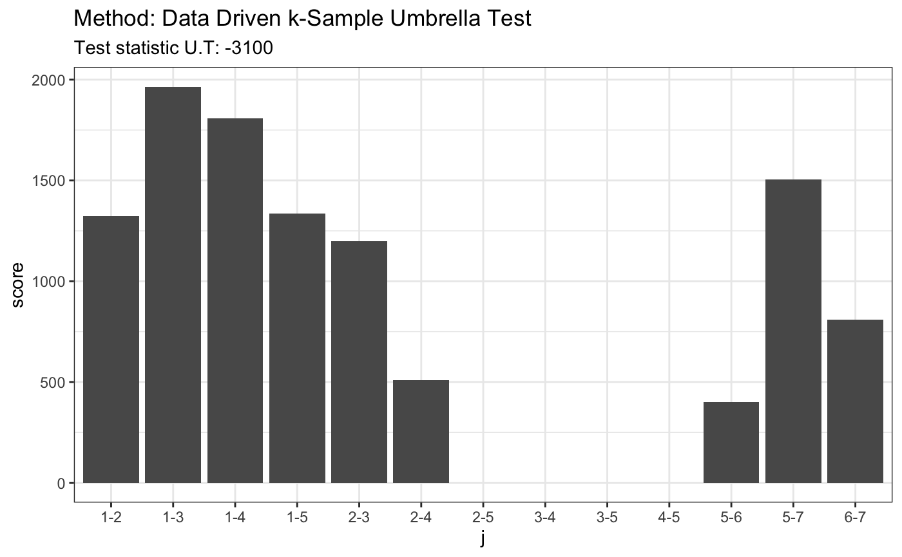

ddst.umbrella.test.RdPerforms data driven smooth test for so-called umbrella alternatives in k-sample problem. Suppose that we have random samples from k distributions F_i where i = 1, ..., k. The null hypothesis is that there is no umbrella pattern, i.e. F_1 >= ... >= F_p <= ... <= F_k and F_i != F_j for some i and j. The alternative is that there is an umbrella pattern i.e. F_1 >= ... >= F_p <= ... <= F_k and F_i != F_j for some i and j. Detailed description of the test statistic is provided in Wylupek (2016).
ddst.umbrella.test(x, ..., tlh.p = 2.2, tl.n = 2.2, p = 3)
| x | a list with k-vectors or a single vector. |
|---|---|
| ... | if x is a single vector, then remaing k-1 vectors are provided in the ... argument |
| tlh.p | a positive number, penalty for model selection rule |
| tl.n | a positive number, penalty for model selection rule |
| p | peak of the umbrella |
An automatic test for the umbrella alternatives. Wylupek (2016) https://onlinelibrary.wiley.com/doi/abs/10.1111/sjos.12231
set.seed(7) # H0 is true x = runif(80) y = runif(80) + 0.2 z = runif(80) ddst.umbrella.test(x, y, z, p = 2)#> #> Data Driven k-Sample Umbrella Test #> #> data: #> U.T = 412.82, p = 2 #>#> #> Data Driven k-Sample Umbrella Test #> #> data: #> U.T = 412.82, p = 2 #>plot(t)# known fixed alternative x1 = rnorm(80) x2 = rnorm(80) + 2 x3 = rnorm(80) + 4 x4 = rnorm(80) + 3 x5 = rnorm(80) + 2 x6 = rnorm(80) + 1 x7 = rnorm(80) t <- ddst.umbrella.test(list(x1, x2, x3, x4, x5, x6, x7), p = 3) t#> #> Data Driven k-Sample Umbrella Test #> #> data: #> U.T = 4662.7, p = 3 #>plot(t)#> #> Data Driven k-Sample Umbrella Test #> #> data: #> U.T = -3101, p = 5 #>plot(t)